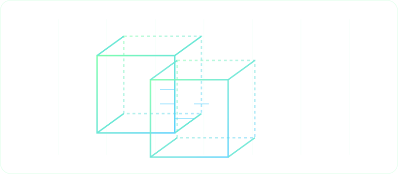

Cocodedk / Pentest Tool
ClawPwn
AI-assisted offensive security with a focus on signal, speed, and operator control.
Core Capabilities
Recon Grid
Target mapping, service fingerprinting, raw content fetching, CVE research, and anomaly spotting with structured output.
Scanner Orchestration
Modular plugin system: nmap, nuclei, sqlmap, nikto, feroxbuster, wpscan, testssl, and more.
AI Agent
LLM-driven tool-use agent plans attacks, executes tiered scans, revises strategy on findings.
Autopilot Mode
Autonomous multi-cycle recon. The agent loops: plan → scan → analyze → decide → repeat.
Interactive Console
Natural language or CLI input with auto-routing. Prefix ! for CLI, ? for NLI.
Shell Command Execution
Run CLI tools (aws, curl, openssl) directly via the agent with approval gates and audit logging.
Report Forge
Generate findings reports in HTML, PDF, JSON, or Markdown with evidence and remediation steps.
Doctor
Pre-flight health check: Python version, external tools, privileges, wordlists, API keys, and project status.
Autopilot Mode
Unattended, multi-cycle reconnaissance and vulnerability detection driven by the LLM agent. No exploitation or credential brute-forcing — recon only.
# Basic usage (uses active target)
clawpwn autopilot
# Specify target, limit to 3 cycles and 1 hour
clawpwn autopilot http://10.0.0.5 --cycles 3 --duration 1.0
# Verbose output with progress details
clawpwn autopilot http://10.0.0.5 -c 5 -d 4.0 --verboseHow It Works
- Each cycle generates a recon plan ordered fastest-first
- Executes tiered tools: fingerprint, research, web scan, network scan
- Summarizes results and evaluates new attack surfaces
- Lightweight LLM call evaluates results and decides next steps
- Stops when coverage is thorough, cycle or time limit reached
Options
| Option | Description |
|---|---|
--cycles, -c | Max recon cycles (default: 5) |
--duration, -d | Max hours (default: 4.0) |
--verbose, -v | Show per-step progress |
Excluded tools: credential_test, run_custom_script, run_command
Command Reference
| Command | Purpose | Example |
|---|---|---|
init | Initialize project | clawpwn init |
target | Set active target | clawpwn target http://10.0.0.5 |
status | Show target, phase, findings | clawpwn status |
scan | Network + web scanning | clawpwn scan --depth deep |
discover | Discover live hosts | clawpwn discover --range 192.168.1.0/24 |
autopilot | Autonomous recon loop | clawpwn autopilot --cycles 3 |
recon | Subdomain enumeration (Amass) | clawpwn recon example.com --mode passive |
experience | Manage global experience DB | clawpwn experience --domain example.com |
killchain | AI-guided end-to-end phases | clawpwn killchain --auto |
report | Generate report | clawpwn report --format html |
logs | Show project logs | clawpwn logs --limit 100 |
config | Show/edit config | clawpwn config show |
objective | Set/show/clear objective | clawpwn objective set "..." |
memory | Show/clear project memory | clawpwn memory show |
doctor | Pre-flight health check | clawpwn doctor |
console | Interactive console | clawpwn console |
Quick Start
# Install
./install.sh
# Check setup
clawpwn doctor
# Create project
mkdir -p ~/pentest/target && cd ~/pentest/target
clawpwn init
# Set target and scan
clawpwn target https://example.com
clawpwn scan --depth normal
# Or run autonomous recon
clawpwn autopilot https://example.com --cycles 3
# Open interactive console
clawpwn consoleArchitecture
Signal Stack
- CLI Typer + Rich terminal UI
- AI Core LLM orchestrator with tool-use agent
- Autopilot Supervisor loop over plan executor
- Modules Scanner plugins, network, credential test
- Storage SQLite per project + Postgres experience DB
AI Execution Paths
- Plan Executor Code-driven, 3 LLM calls, tiered parallel
- Agent Loop Conversational, up to 16 tool-use rounds
- Autopilot Multi-cycle supervisor with follow-up decisions
- Routing Intent classification selects the right path
Scanner Support
Network
nmap · masscan · rustscan · naabu
Recon
amass (subdomain enumeration)
Web
builtin · nuclei · nikto · sqlmap · feroxbuster · ffuf · wpscan · testssl · zap
Credentials
Built-in form tester · hydra backend
Agent Tools
fetch_url (raw content extraction) · run_command (shell: aws, curl, etc.)
Configuration
cp .env.example .envEnvironment Variables
CLAWPWN_LLM_PROVIDER | anthropic, openai, openrouter |
CLAWPWN_LLM_API_KEY | API key for selected provider |
CLAWPWN_LLM_MODEL | Model override |
CLAWPWN_EXPERIENCE_DB_URL | Postgres connection string |
CLAWPWN_CRED_WORDLIST | Path to credential wordlist |
Precedence
- Process environment variables
- Project
.clawpwn/.env - Global
~/.clawpwn/config.yml - Code defaults
Operational Notes
ClawPwn is intended for authorized security testing only. Always obtain written permission and follow local laws. MIT License.